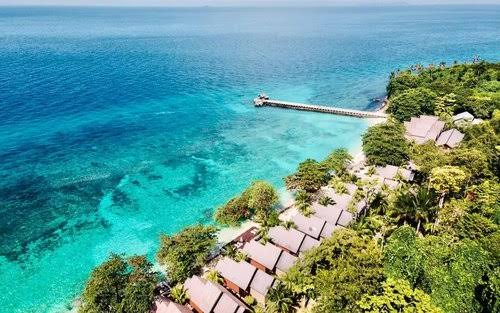

Tioman Island, Pahang

Tioman Island in Pahang is a duty-free holiday paradise on the east coast of Peninsular Malaysia, known for its crystal clear waters, rich marine life and stunning tropical jungle landscapes. It offers activities such as scuba diving, snorkeling and relaxing on beautiful beaches. Located in the state of Pahang, this island, although small at only 20 km long and 12 km wide, has a lot to offer. Dominated by dense rainforest and surrounded by waters rich in marine life, Tioman Island offers 1001 reasons for nature lovers to come and explore the island. Tioman Island Marine Park hosts three marine ecosystems: coral reef, seagrass bed, and mangrove forest. The coral reefs accommodate 350 species of scleractinian corals from 67 genera including three endangered species (Alveopora minuta, Isopora togianensis and Pectinia maxima).